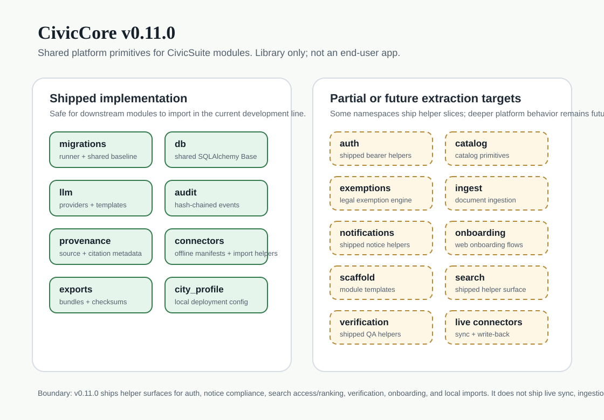
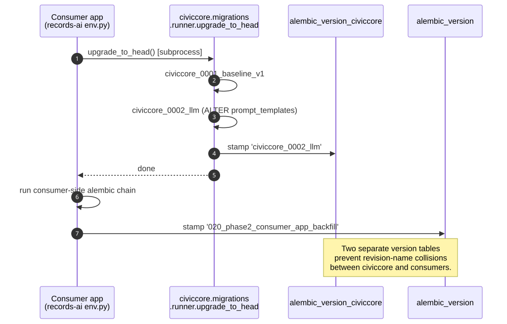

CivicCore
Shared platform library for the open-source CivicSuite municipal operations suite. CivicCore is consumed by CivicSuite modules; it is not an end-user municipal app. Apache 2.0.
What it is
- A shared Python library every CivicSuite module depends on. Not an end-user product.
- Distributed as versioned GitHub release wheels with strict SemVer against the documented public API.
- Local-first by default: Ollama, PostgreSQL, and offline export primitives stay operator-controlled.
- Designed for downstream modules without tight coupling: migrations, LLMs, audit chains, provenance, manifests, export bundles, and city profiles.
Shipped core surface
civiccore.migrations- migration runner + idempotent guards +civiccore_0001_baseline_v1+civiccore_0002_llm.civiccore.db- shared SQLAlchemy declarativeBase.civiccore.llm- providers, templates, model registry, context utilities, and structured output.civiccore.audit- hash-chained audit primitives plus legacy-compatible persisted audit-log verification helpers.civiccore.provenance- source, citation, document, and provenance metadata contracts.civiccore.connectors- offline import/export manifest schemas, local-first import helpers, live-sync retry/circuit-breaker primitives, and source-list status projections for supported agenda-platform payloads.civiccore.exports- static export-bundle manifest and checksum helpers.civiccore.auth- bearer-token auth helpers, staff-key route gates, and trusted-header reverse-proxy config/source-boundary helpers for protected staff routes.civiccore.city_profile- local city/deployment configuration models.
Added across the later development lines
civiccore.auth- minimal bearer-token and staff-key role checks for non-public FastAPI routes, with actionable401,403, and503responses.civiccore.verification- content-bound browser QA release-evidence validation helpers.civiccore.release_provenance- shared release provenance checks for Sigstore-signed release attestations, exact per-repo/per-tag workflow identity, artifact hashes, tag ref, target commit, and target tree.civiccore.search- deterministic query normalization, shared text matching, permission-aware access checks, and reciprocal-rank-fusion helpers.civiccore.connectors- local-payload meeting import normalization with shared source provenance and actionable fix-path errors.civiccore.connectors- storage-neutral live connector sync retry/circuit-breaker primitives with actionable operator health copy and source-list status projection.civiccore.notifications- deterministic notice deadline planning plus publication-compliance warning helpers.civiccore.onboarding- storage-neutral profile interview field-order, answer-parsing, completion-state, and next-question helpers.civiccore.scheduling- cron validation and next-run helpers for module background jobs.civiccore.ingest- shared document ingestion for PDF, DOCX, XLSX, CSV, EML, HTML, and text with sentence-aware chunking, local Ollama embeddings, and pgvector-backed document chunks.
Still planned extraction targets
These namespaces or behaviors are not shipped yet. The placeholder namespace ADRs define the downstream consumption rule: no module depends on these namespaces until a future versioned CivicCore release ships them.
civiccore.catalog- catalog primitives.civiccore.exemptions- 50-state public-records exemption engine.civiccore.notifications- delivery queues and outbound notification orchestration.civiccore.onboarding- web onboarding UI and persistence orchestration.civiccore.scheduling- scheduler runtime and task queue orchestration.civiccore.scaffold- scaffolding helpers.civiccore.search- full search engine, index storage, and database-backed retrieval orchestration.civiccore.verification- sovereignty verification.- Credential storage, vendor-specific network adapters, vendor write-back, and legal determinations.

Install
From the current GitHub release wheel (v1.2.0) - civiccore is GitHub-wheel-only, not on PyPI:
pip install https://github.com/CivicSuite/civiccore/releases/download/v1.2.0/civiccore-1.2.0-py3-none-any.whlFor development from a clone:
git clone https://github.com/CivicSuite/civiccore.git
cd civiccore
pip install -e .[dev]Each release publishes SHA256SUMS.txt alongside the wheel and sdist. Verify the checksum before promoting an artifact downstream.
Release provenance note: GitHub release pages can show a target commit as Verified even when the release tag itself is lightweight or unsigned. CivicCore treats tags as release pointers and verifies release-attestation.json plus its Sigstore/cosign bundle as the trust artifact. The exact workflow identity is pinned per repo and per tag; see docs/ops/release-signing.md, docs/ops/release-attestation.schema.json, docs/ops/civiccore-tier1-retrofit-ledger.md, and docs/ops/historical-provenance.md. The published v1.2.0 release is the current downstream productization line and includes the shared document-ingestion pipeline used by the city-core release train; v0.22.1 remains the first attested baseline. Earlier CivicCore releases are retained for historical installs only and must not be promoted as provenance baselines unless a future additive attestation is explicitly authorized, published, and ledgered.

Status
v1.2.0 is the current published downstream productization line.
It carries the shared document-ingestion pipeline used by the city-core release train, plus the CO-7 freeze-line trust anchor, the CO-8 procurement evidence pack, and the CO-9 closeout trail.
v0.22.1 remains the first attested baseline release. The current development line includes the canonical Sigstore release-provenance helper,
versioned attestation schema, fixture-driven gate, and release workflow that signs and verifies
release-attestation.json before publication, plus source-list status projection helpers for connector workspaces,
cron schedule validation helpers,
startup config validation helpers,
vendor delta request planning, reusable mock-city proof contracts, live connector sync retry/circuit-breaker primitives
and persisted audit-log hash and verification helpers for
database-backed module audit rows on top of shared civiccore.ingest
discovery/fetch, cited-source validation, and document-ingestion pipeline on top of shared civiccore.security
connector host-validation and encrypted-config helpers on top of shared civiccore.onboarding
profile interview helpers on top of shared civiccore.notifications
notice deadline and publication-compliance helpers on top of the already-shipped
civiccore.auth trusted-header config and proxy-boundary helpers, civiccore.verification,
civiccore.search access and ranking helpers, civiccore.connectors, audit,
provenance, manifest, export-bundle, and city profile primitives.
v0.2.0 shipped the civiccore.llm module; v0.1.0 shipped the migration baseline.
Public API overview
High-level public surface:
- Migrations -
civiccore.migrationsrunner + idempotent guards. - db.Base - shared SQLAlchemy declarative base.
- LLM - providers, prompt templates, model registry, context utilities, structured output.
- Audit chains -
AuditActor,AuditSubject,AuditEvent,AuditHashChain,PersistedAuditLogEntry,compute_persisted_audit_hash, andverify_persisted_audit_chain. - Provenance -
SourceReference,SourceKind,CitationTarget,DocumentMetadata,ProvenanceBundle. - Manifests and exports -
ImportManifest,ExportManifest,validate_manifest,ExportBundle,write_manifest,validate_bundle. - Connector sync -
SyncCircuitState,SyncRunResult,SyncSourceStatus,apply_sync_run_result,build_sync_operator_status,build_sync_source_status,SyncRetryPolicy,with_http_retry, andplan_vendor_delta_request. - City profiles -
CityProfile,DepartmentProfile,DeploymentProfile,ModuleEnablement,load_city_profile. - Auth helper -
civiccore.authbearer-token role checks, staff-key gates, trusted-header config loading, and proxy-source enforcement for non-public FastAPI routes. - Verification helper -
civiccore.verificationcontent-bound browser QA release evidence validation. - Release provenance helper -
civiccore.release_provenancepre-flight gate for Sigstore release attestation, exact workflow identity, GitHub tag ref, target commit, release tree, artifact hashes, and adversarial fixture verification. - Search helpers -
civiccore.searchnormalization, deterministic text matching, permission-aware access checks, and reciprocal-rank-fusion. - Connector import helpers -
civiccore.connectorslocal-first meeting import normalization, actionable fix-path errors, and source provenance builders. - Notice helpers -
civiccore.notificationsdeadline planning plus publication-compliance warning contracts. - Onboarding helpers -
civiccore.onboardingfield order, answer normalization, completion-state, and skip-aware next-question selection. - Scheduling helpers -
civiccore.schedulingcron interval validation and next-run calculation for module background jobs. - Mock-city contracts -
civiccore.testing.mock_cityno-network vendor, municipal OIDC, and backup-retention proof contracts.

Compatibility
Current module foundations span older civiccore lines while newer product-depth consumers already target later releases. Production-depth consumers should target only the released CivicCore version recorded in their compatibility matrix. Every CivicSuite module's README declares a CivicCore version range.
Documentation
- CivicSuite Unified Spec - canonical suite reference.
- README - quick start and public API surface.
- USER-MANUAL - non-technical overview, integrator guide, architecture reference.
- CHANGELOG - Keep a Changelog format.
- Placeholder ADRs - CO-7 deferral rationale and downstream consumption rules for reserved namespaces.
- CO-8 procurement evidence pack - threat model, SBOMs, license manifest, incident drills, sovereignty proof, patch cadence, claims registry, and worked install-and-verify path.
- CO-9 closeout report - release authorization payload, attested release chain, freeze-line tag, audit gate, and CivicClerk unblock record.
- Cleanroom harness - pinned CO-6 container for reproducing release, Sigstore, SHA256SUMS, and offline runtime checks.
- Historical provenance policy - operative disclosure for the attested baseline and historical release boundary.
- Tier 1 retrofit ledger - live CivicCore release-tag provenance decisions.
- CO-4 cross-module retrofit report - merged downstream ledger closeout for CivicRecords AI, CivicClerk, and CivicCode.
Source
The repository lives at CivicSuite/civiccore on GitHub. Issues, pull requests, and discussions happen there.